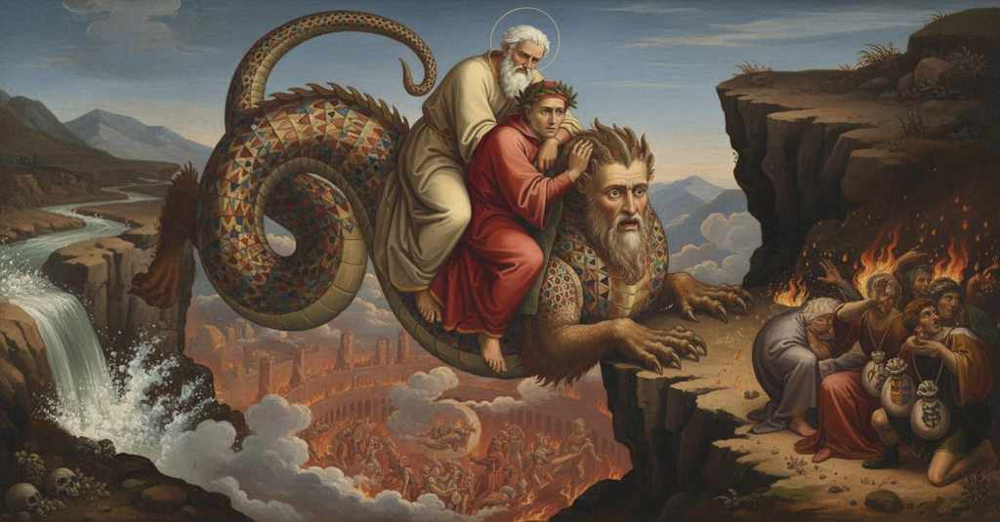

Inferno — Canto 17

Virgilio presenta Gerione, figura della frode, manda Dante a vedere gli usurai tormentati e poi, montati entrambi sul mostro, i due poeti scendono terrorizzati attraverso l’aria fino all’ottavo cerchio. Virgil presents Geryon, figure of fraud, sends Dante to see the tormented usurers, and then, both mounted on the monster, the two poets descend terrified through the air to the eighth circle. ウェルギリウスは欺瞞の姿であるゲーリュオーンを紹介し、苦しむ高利貸したちを見にダンテを送り、その後二人の詩人は怪物に乗って恐怖のうちに空中を下り、第八圏へ至る。
1
«Ecco la fiera con la coda aguzza,
«Behold the beast with the sharp tail,
«Ecco la fiera con la coda aguzza,
2
che passa i monti e rompe i muri e l’armi!
that passes mountains and breaks walls and arms!
che passa i monti e rompe i muri e l’armi!
3
Ecco colei che tutto ’l mondo appuzza!».
Behold her who stinks up the whole world!».
Ecco colei che tutto ’l mondo appuzza!».
4
Sì cominciò lo mio duca a parlarmi;
Thus my leader began to speak to me;
Sì cominciò lo mio duca a parlarmi;
5
e accennolle che venisse a proda,
and beckoned to it that it should come to the bank,
e accennolle che venisse a proda,
6
vicino al fin d’i passeggiati marmi.
near the end of the walked-on stone path.
vicino al fin d’i passeggiati marmi.
7
E quella sozza imagine di froda
And that filthy image of fraud
E quella sozza imagine di froda
8
sen venne, e arrivò la testa e ’l busto,
came on, and brought to land its head and bust,
sen venne, e arrivò la testa e ’l busto,
9
ma ’n su la riva non trasse la coda.
but on the bank it did not draw its tail.
ma ’n su la riva non trasse la coda.
10
La faccia sua era faccia d’uom giusto,
Its face was the face of a just man,
La faccia sua era faccia d’uom giusto,
11
tanto benigna avea di fuor la pelle,
so benign was its outward skin,
tanto benigna avea di fuor la pelle,
12
e d’un serpente tutto l’altro fusto;
and all the rest of its trunk was of a serpent;
e d’un serpente tutto l’altro fusto;
13
due branche avea pilose insin l’ascelle;
it had two paws, hairy up to the armpits;
due branche avea pilose insin l’ascelle;
14
lo dosso e ’l petto e ambedue le coste
the back and the chest and both the flanks
lo dosso e ’l petto e ambedue le coste
15
dipinti avea di nodi e di rotelle.
it had painted with knots and little wheels.
dipinti avea di nodi e di rotelle.
16
Con più color, sommesse e sovraposte
With more colors, laid on and overlaid,
Con più color, sommesse e sovraposte
17
non fer mai drappi Tartari né Turchi,
never did Tartars or Turks make cloths,
non fer mai drappi Tartari né Turchi,
18
né fuor tai tele per Aragne imposte.
nor were such webs by Arachne laid.
né fuor tai tele per Aragne imposte.
19
Come talvolta stanno a riva i burchi,
As sometimes barges stand on the shore,
Come talvolta stanno a riva i burchi,
20
che parte sono in acqua e parte in terra,
that are partly in water and partly on land,
che parte sono in acqua e parte in terra,
21
e come là tra li Tedeschi lurchi
and as there among the guzzling Germans
e come là tra li Tedeschi lurchi
22
lo bivero s’assetta a far sua guerra,
the beaver sets itself to make its war,
lo bivero s’assetta a far sua guerra,
23
così la fiera pessima si stava
so the most wicked beast was positioned
così la fiera pessima si stava
24
su l’orlo ch’è di pietra e ’l sabbion serra.
on the edge that is of stone and encloses the great sand.
su l’orlo ch’è di pietra e ’l sabbion serra.
25
Nel vano tutta sua coda guizzava,
In the void its whole tail was twitching,
Nel vano tutta sua coda guizzava,
26
torcendo in sù la venenosa forca
twisting upward its venomous fork
torcendo in sù la venenosa forca
27
ch’a guisa di scorpion la punta armava.
that in the guise of a scorpion armed its point.
ch’a guisa di scorpion la punta armava.
28
Lo duca disse: «Or convien che si torca
My guide said: “Now it is fitting that our way
導き手は言った、「今や我々の道を曲げねばならぬ、
29
la nostra via un poco insino a quella
turn a little, as far as that
少しばかり、あの邪悪な獣の方へと、
30
bestia malvagia che colà si corca».
wicked beast that lies down over there.”
あそこに横たわっている獣の方へ」。
31
Però scendemmo a la destra mammella,
Therefore we descended to the right breast,
そこで我々は右の土手へと下り、
32
e diece passi femmo in su lo stremo,
and we made ten steps upon the very edge,
崖の端を十歩進んだ、
33
per ben cessar la rena e la fiammella.
to well avoid the sand and the little flame.
砂と小さな炎をうまく避けるために。
34
E quando noi a lei venuti semo,
And when we had come to it,
そして我々がその獣のところへ来ると、
35
poco più oltre veggio in su la rena
a little further on I see upon the sand
少し先に砂の上で私は見た、
36
gente seder propinqua al loco scemo.
people sitting near the empty space.
虚ろな場所の近くに座っている人々を。
37
Quivi ’l maestro «Acciò che tutta piena
Here the master: “So that a full
そこで師は、「お前がこの環の完全な
38
esperïenza d’esto giron porti»,
experience of this circle you may carry away,”
経験を持ち帰るために」と、
39
mi disse, «va, e vedi la lor mena.
he said to me, “go, and see their condition.
私に言った、「行け、そして彼らの様子を見るがよい。
40
Li tuoi ragionamenti sian là corti;
Let your talks there be brief;
そこでの汝の対話は短くするのだ。
41
mentre che torni, parlerò con questa,
while you return, I will speak with this one,
お前が戻る間、私はこの者と話そう、
42
che ne conceda i suoi omeri forti».
that it may grant us its strong shoulders.”
我々にその屈強な肩を貸してくれるようにと」。
43
Così ancor su per la strema testa
Thus again upon the extreme head
こうして、なおもその第七圏の
44
di quel settimo cerchio tutto solo
of that seventh circle, all alone
最果ての頂きの上を、全く一人で
45
andai, dove sedea la gente mesta.
I went, where the mournful people were sitting.
私は進んだ、悲しむ人々が座っているところへ。
46
Per li occhi fora scoppiava lor duolo;
Out through their eyes their sorrow was bursting;
目を通して彼らの苦悩は迸り出ていた。
47
di qua, di là soccorrien con le mani
here, there, they helped themselves with their hands
あちらこちらと手で払っていた、
48
quando a’ vapori, e quando al caldo suolo:
now from the vapors, now from the hot ground:
あるときは蒸気を、またあるときは熱い土を。
49
non altrimenti fan di state i cani
in no other way do dogs in summer,
夏に犬がするのと何ら変わらない、
50
or col ceffo or col piè, quando son morsi
now with the snout, now with the paw, when they are bitten
あるときは鼻面で、あるときは足で、噛まれたときに、
51
o da pulci o da mosche o da tafani.
either by fleas, or by flies, or by horseflies.
蚤にか、蠅にか、あるいはアブにか。
52
Poi che nel viso a certi li occhi porsi,
After I set my eyes upon the faces of some,
ある者たちの顔に目を向けると、
53
ne’ quali ’l doloroso foco casca,
on whom the painful fire falls,
その上には苦痛の炎が降り注いでおり、
54
non ne conobbi alcun; ma io m’accorsi
I recognized none of them; but I took note
知っている者は誰もおらず、しかし私は気づいた
55
che dal collo a ciascun pendea una tasca
that from the neck of each there hung a purse
それぞれの首から袋が一つ垂れ下がっているのを。
56
ch’avea certo colore e certo segno,
which had a certain color and a certain emblem,
それにはある特定の色と紋章があり、
57
e quindi par che ’l loro occhio si pasca.
and on this it seems their eye does feast.
彼らの目はそこから糧を得ているかのようだった。
58
E com’ io riguardando tra lor vegno,
And as I came among them, looking,
そして彼らの間を見ながら進むと、
59
in una borsa gialla vidi azzurro
on a yellow purse I saw an azure
黄色い袋の上に、私は青いものを見た、
60
che d’un leone avea faccia e contegno.
that had the face and bearing of a lion.
それは獅子の顔と姿をしていた。
61
Poi, procedendo di mio sguardo il curro,
Then, proceeding on the course of my gaze,
次に、私の視線の歩みを進めると、
62
vidine un’altra come sangue rossa,
I saw another, red as blood,
血のように赤い別の袋が見え、
63
mostrando un’oca bianca più che burro.
showing a goose whiter than butter.
バターよりも白い鵞鳥が描かれていた。
64
E un che d’una scrofa azzurra e grossa
And one who with a sow, blue and pregnant,
そして、青く太った雌豚の紋章が
65
segnato avea lo suo sacchetto bianco,
had marked his small white pouch,
その白い小袋に記されていた一人が、
66
mi disse: «Che fai tu in questa fossa?
said to me: “What are you doing in this pit?
私に言った。「お前はこの溝で何をしているのだ？
67
Or te ne va; e perché se’ vivo anco,
Now be off; and because you are still alive,
さあ、立ち去れ。そして、お前はまだ生きているのだから、
68
sappi che ’l mio vicin Vitalïano
know that my neighbor Vitaliano
知っておくがいい、私の隣人ヴィタリアーノが
69
sederà qui dal mio sinistro fianco.
will sit here at my left side.
ここ、私の左側に座ることになるだろうと。
70
Con questi Fiorentin son padoano:
With these Florentines I am a Paduan:
このフィレンツェ人たちの中にいるが、私はパドヴァ人だ。
71
spesse fïate mi ’ntronan li orecchi
often they deafen my ears
たびたび奴らは私の耳をガンガン鳴らす、
72
gridando: “Vegna ’l cavalier sovrano,
shouting: ‘Let the sovereign knight come,
叫びながら、『来たれ、至高の騎士よ、
73
che recherà la tasca con tre becchi!”».
who will bring the purse with three goats!’”
三つの嘴を持つ袋を携えた騎士が！』と」。
74
Qui distorse la bocca e di fuor trasse
Here he twisted his mouth and stuck out
ここで彼は口を歪め、外へ引き出した
75
la lingua, come bue che ’l naso lecchi.
his tongue, like an ox that licks its nose.
舌を、鼻を舐める牛のように。
76
E io, temendo no ’l più star crucciasse
And I, fearing that to stay longer would vex
そして私は、これ以上長居すれば苛立たせるのを恐れ、
77
lui che di poco star m’avea ’mmonito,
him who had warned me to stay but a little,
長居するなと私に忠告したその人を、
78
torna’mi in dietro da l’anime lasse.
turned back from the weary souls.
疲れ果てた魂たちから背を向けて戻った。
79
Trova’ il duca mio ch’era salito
I found my guide who had already climbed
我が導き手を見つけると、彼はすでに登っていた
80
già su la groppa del fiero animale,
onto the croup of the fierce animal,
その恐ろしい獣の背の上に、
81
e disse a me: «Or sie forte e ardito.
and said to me: “Now be strong and bold.
そして私に言った、「さあ、強く大胆であれ。
82
Omai si scende per sì fatte scale;
Henceforth we descend by such stairs;
今からはこのような階段で下りていくのだ。
83
monta dinanzi, ch’i’ voglio esser mezzo,
mount in front, for I wish to be in the middle,
前に乗れ、私が間にいよう、
84
sì che la coda non possa far male».
so that the tail cannot do you harm.”
尾がおまえを傷つけられぬよう」。
85
Qual è colui che sì presso ha ’l riprezzo
Like one who is so close to the chill
四日熱の発作が間近な者、
86
de la quartana, c’ha già l’unghie smorte,
of the quartan fever, that his nails are already pale,
すでにその爪は色を失い、
87
e triema tutto pur guardando ’l rezzo,
and trembles all over just looking at the shade,
そして日陰を見ただけで全身が震える、
88
tal divenn’ io a le parole porte;
such I became at the words he spoke;
そのような者に、私は伝えられた言葉でなった。
89
ma vergogna mi fé le sue minacce,
but his commands brought on me shame,
しかし恥が、彼の叱咤を私に効かせた、
90
che innanzi a buon segnor fa servo forte.
which before a good lord makes a servant strong.
それは善き主君の前では、僕を強くするのだ。
91
I’ m’assettai in su quelle spallacce;
I settled myself on those monstrous shoulders;
私はその巨大な肩の上に腰を下ろした。
92
sì volli dir, ma la voce non venne
I wanted to say, but the voice did not come
そう言いたかったが、声は出なかった、
93
com’ io credetti: ‘Fa che tu m’abbracce’.
as I thought: ‘Make sure that you embrace me.’
私が思ったようには、「どうか私を抱きしめてください」と。
94
Ma esso, ch’altra volta mi sovvenne
But he, who at other times had helped me
しかし彼、別の危難の折にも私を助けてくれたが、
95
ad altro forse, tosto ch’i’ montai
in other peril, as soon as I mounted
私が乗り込むやいなや
96
con le braccia m’avvinse e mi sostenne;
with his arms entwined and sustained me;
両腕で私を抱きしめ、支えてくれた。
97
e disse: «Gerïon, moviti omai:
and said: “Geryon, move now:
そして言った、「ゲリュオンよ、さあ動け。
98
le rote larghe, e lo scender sia poco;
let the circles be wide, and the descent be slow;
旋回は大きく、下りはゆっくりと。
99
pensa la nova soma che tu hai».
consider the new burden that you have.”
おまえが乗せている新たな荷を考えよ」。
100
Come la navicella esce di loco
As a small boat goes from its place
小舟がその場所から出るように
101
in dietro in dietro, sì quindi si tolse;
backward, backward, so he took himself from there;
後へ、後へと、そのように彼はそこから身を引いた。
102
e poi ch’al tutto si sentì a gioco,
and when he felt himself completely free,
そして、完全に自由になったと感じると、
103
là ’v’ era ’l petto, la coda rivolse,
there where his chest had been, he turned his tail,
胸のあった場所に、尾を向け、
104
e quella tesa, come anguilla, mosse,
and stretched it out, moved it like an eel,
そしてそれを伸ばし、鰻のように動かし、
105
e con le branche l’aere a sé raccolse.
and with his paws gathered the air to himself.
両の前脚で空気を自分の方へ掻き集めた。
106
Maggior paura non credo che fosse
Greater fear I do not believe there was
これほどの恐怖はなかったと思う、
107
quando Fetonte abbandonò li freni,
when Phaethon abandoned the reins,
ファエトンが手綱を放り出した時も、
108
per che ’l ciel, come pare ancor, si cosse;
for which the sky, as it still appears, was scorched;
そのために天は、今も見えるように、焼け焦げたが。
109
né quando Icaro misero le reni
nor when wretched Icarus the loins
また、哀れなイカロスが背中の
110
sentì spennar per la scaldata cera,
felt unfeathered by the heated wax,
熱せられた蝋で羽が抜けるのを感じ、
111
gridando il padre a lui «Mala via tieni!»,
his father crying to him “You take a bad way!”,
父が彼に「悪しき道を行くぞ！」と叫んだ時も、
112
che fu la mia, quando vidi ch’i’ era
than was mine, when I saw that I was
私の恐怖ほどではなかった。私が四方すべて
113
ne l’aere d’ogne parte, e vidi spenta
in the air on every side, and saw extinguished
空中にいると知り、そして消えたのを見た時、
114
ogne veduta fuor che de la fera.
every sight except for that of the beast.
あの獣以外のあらゆる光景が。
115
Ella sen va notando lenta lenta;
She goes along swimming slowly, slowly;
獣はゆっくりと泳ぎ進む。
116
rota e discende, ma non me n’accorgo
she wheels and descends, but I do not notice it
旋回し、降下するが、私は気づかない、
117
se non che al viso e di sotto mi venta.
except that on my face and from below wind blows on me.
顔と下から風が吹きつけるのを除いては。
118
Io sentia già da la man destra il gorgo
I already heard on the right hand the whirlpool
私はすでに右手の方で、渦が
119
far sotto noi un orribile scroscio,
make beneath us a horrible roar,
我々の下で恐ろしい轟音を立てるのを聞き、
120
per che con li occhi ’n giù la testa sporgo.
for which with my eyes downward I stick my head out.
それゆえに目を下に向け、頭を突き出した。
121
Allor fu’ io più timido a lo stoscio,
Then I was more timid at the precipice,
すると私は落下への恐怖を一層募らせた、
122
però ch’i’ vidi fuochi e senti’ pianti;
because I saw fires and heard wails;
なぜなら火が見え、嘆きが聞こえたからだ。
123
ond’ io tremando tutto mi raccoscio.
at which, trembling all over, I crouch down.
ゆえに私は全身を震わせ、身を縮めた。
124
E vidi poi, ché nol vedea davanti,
And I saw then, for I did not see it before,
そして私は見た、それまで見えなかったが、
125
lo scendere e ’l girar per li gran mali
the descending and the circling by the great torments
降下と旋回を、様々な方角から近づいてくる
126
che s’appressavan da diversi canti.
that were approaching from different sides.
大いなる苦しみゆえの。
127
Come ’l falcon ch’è stato assai su l’ali,
Like the falcon that has been long on the wing,
長く翼を広げていた鷹が、
128
che sanza veder logoro o uccello
that without seeing lure or bird
餌も鳥も見ずに
129
fa dire al falconiere «Omè, tu cali!»,
makes the falconer say “Alas, you descend!”,
鷹匠に「ああ、下りてくるか！」と言わせるように、
130
discende lasso onde si move isnello,
descends weary from where it moves swiftly,
素早く動いていた場所から疲れ果てて下り、
131
per cento rote, e da lunge si pone
in a hundred wheels, and sets itself far
百回も旋回し、遠く離れた所に
132
dal suo maestro, disdegnoso e fello;
from its master, disdainful and sullen;
主から、不満げに、意地悪く降り立つように、
133
così ne puose al fondo Gerïone
so at the bottom Geryon set us
そのようにゲリュオンは我々を底に降ろした、
134
al piè al piè de la stagliata rocca,
at the very foot of the jagged cliff,
切り立った岩壁のまさにその麓に。
135
e, discarcate le nostre persone,
and, having discharged our persons,
そして、我々の身を降ろすと、
136
si dileguò come da corda cocca.
vanished like an arrow from the bowstring.
弦から放たれた矢のように消え去った。